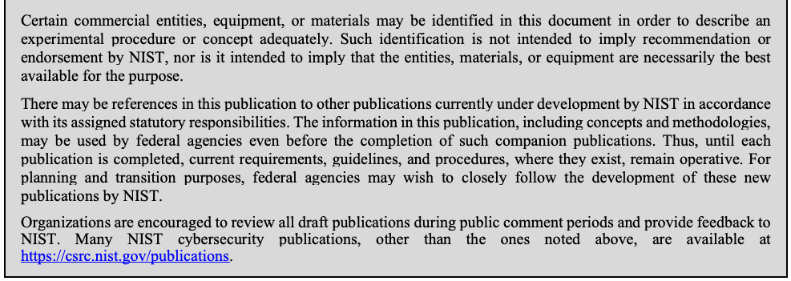

NIST IR 8246 日本語訳
英語タイトル : Collaborative Vulnerability Metadata Acceptance Process (CVMAP) for CVE Numbering Authorities (CNAs) and Authorized Data Publishers日本語タイトル : CVE Numbering Authority（CNA）および Authorized Data Publisher 向けの Collaborative Vulnerability Metadata Acceptance Process（CVMAP）
公開日 : 2020-12-15
原文URL : https://csrc.nist.gov/pubs/ir/8246/final
翻訳編集 : 自動生成（有志による非公式の日本語訳）, 原文取得日 : 2026-10-31, 訳文 : 145 / 155 ブロック
[要約] NIST IR 8246 は、CVE レコードのメタデータ提出プロセスを正式に定める文書であり、CVE Numbering Authority（CNA）と Authorized Data Publisher 向けの Collaborative Vulnerability Metadata Acceptance Process（CVMAP）を説明します。このプロセスは、CNA が提供する技術的知見の強みと、National Vulnerability Database（NVD）のアナリストが提供する、一貫性があり偏りのない CVE レコードのメタデータの適用を活用することを目的としています。プロセスにより、外部の組織が CVE レコードのメタデータを提出でき、NVD アナリストがほとんど、またはまったく関与せずに、このデータをエンドユーザーに提示できるようになります。文書は、役割と責任、外部からの提出ワークフロー、提出カテゴリ、受け入れレベル、CNA の受け入れプロセス、継続的な報告と監査を扱います。
NISTIR 8246
NISTIR 8246
Collaborative Vulnerability Metadata Acceptance Process (CVMAP) for CVE Numbering Authorities (CNAs) and Authorized Data Publishers
CVE番号付与機関（CNA）および認定データ発行者向けの脆弱性メタデータ共同受入プロセス（CVMAP）
Robert Byers
David Waltermire
Christopher Turner
Robert Byers
David Waltermire
Christopher Turner
This publication is available free of charge from:
本刊行物は次の URL から無料で入手できます:
https://doi.org/10.6028/NIST.IR.8246
https://doi.org/10.6028/NIST.IR.8246
NISTIR 8246
NISTIR 8246
Collaborative Vulnerability Metadata Acceptance Process (CVMAP) for CVE Numbering Authorities (CNAs) and Authorized Data Publishers
CVE番号付与機関（CNA）および認定データ発行者向けの脆弱性メタデータ共同受入プロセス（CVMAP）
Robert Byers
David Waltermire
Chris Turner
Robert Byers
David Waltermire
Chris Turner
Computer Security Division
Information Technology Laboratory
Computer Security Division
Information Technology Laboratory
This publication is available free of charge from:
本刊行物は次の URL から無料で入手できます:
https://doi.org/10.6028/NIST.IR.8246
https://doi.org/10.6028/NIST.IR.8246
December 2020
2020 年 12 月
U.S. Department of Commerce
Wilbur L. Ross, Jr., Secretary
米国商務省
Wilbur L. Ross, Jr. 長官
National Institute of Standards and Technology
米国国立標準技術研究所
Walter Copan, NIST Director and Under Secretary of Commerce for Standards and Technology
Walter Copan、NIST 所長兼商務次官（標準・技術担当）
National Institute of Standards and Technology Interagency or Internal Report 8246
26 pages (December 2020)
米国国立標準技術研究所 省庁間報告書または内部報告書 8246
全 26 ページ（2020 年 12 月）
This publication is available free of charge from:
https://doi.org/10.6028/NIST.IR.8246
本刊行物は次の URL から無料で入手できます:
https://doi.org/10.6028/NIST.IR.8246
Certain commercial entities, equipment, or materials may be identified in this document in order to describe an experimental procedure or concept adequately. Such identification is not intended to imply recommendation or endorsement by NIST, nor is it intended to imply that the entities, materials, or equipment are necessarily the best available for the purpose.
原本PDFの抜粋画像

実験の手順や概念を適切に説明するため、本文書では特定の商業団体、機器、材料に言及している場合があります。こうした言及は、NIST による推奨や推薦を意味するものではなく、それらの団体、材料、機器がその目的に最適であることを意味するものでもありません。
There may be references in this publication to other publications currently under development by NIST in accordance with its assigned statutory responsibilities. The information in this publication, including concepts and methodologies, may be used by federal agencies even before the completion of such companion publications. Thus, until each publication is completed, current requirements, guidelines, and procedures, where they exist, remain operative. For planning and transition purposes, federal agencies may wish to closely follow the development of these new publications by NIST.
本刊行物では、NIST が法令上の責務に従って現在策定中の他の刊行物に言及している場合があります。本刊行物の情報（概念や方法論を含む）は、そうした関連刊行物の完成前であっても、連邦機関が使用してかまいません。したがって、各刊行物が完成するまでは、現行の要件、ガイドライン、手順が存在する場合、それらが引き続き有効です。計画および移行のため、連邦機関は、NIST によるこれらの新しい刊行物の策定状況を注意深く追うことを検討してもよいです。
Organizations are encouraged to review all draft publications during public comment periods and provide feedback to NIST. Many NIST cybersecurity publications, other than the ones noted above, are available at https://csrc.nist.gov/publications.
組織は、公開意見募集の期間中にすべてのドラフト刊行物を確認し、NIST にフィードバックを提供することが推奨されます。上記以外にも、NIST の多くのサイバーセキュリティ刊行物が https://csrc.nist.gov/publications で入手できます。
Comments on this publication may be submitted to:
本刊行物へのコメントの送付先:
National Institute of Standards and Technology
Attn: Computer Security Division, Information Technology Laboratory
100 Bureau Drive (Mail Stop 8930) Gaithersburg, MD 20899-8930
Email: NISTIR_8246-Comments@nist.gov
National Institute of Standards and Technology
Attn: Computer Security Division, Information Technology Laboratory
100 Bureau Drive (Mail Stop 8930) Gaithersburg, MD 20899-8930
電子メール: NISTIR_8246-Comments@nist.gov
All comments are subject to release under the Freedom of Information Act (FOIA).
すべてのコメントは、情報自由法（FOIA）に基づく公開の対象となります。
Reports on Computer Systems Technology
コンピューターシステム技術に関する報告書
The Information Technology Laboratory (ITL) at the National Institute of Standards and Technology (NIST) promotes the U.S. economy and public welfare by providing technical leadership for the Nation’s measurement and standards infrastructure. ITL develops tests, test methods, reference data, proof of concept implementations, and technical analyses to advance the development and productive use of information technology. ITL’s responsibilities include the development of management, administrative, technical, and physical standards and guidelines for the cost-effective security and privacy of other than national security-related information in federal information systems.
米国国立標準技術研究所（NIST）の情報技術研究所（ITL）は、国の測定・標準のインフラストラクチャーに対する技術的リーダーシップを提供することで、米国の経済と公共の福祉を促進しています。ITL は、情報技術の開発と生産的な利用を推進するため、テスト、テスト方法、参照データ、概念実証の実装、技術分析を開発しています。ITL の責務には、連邦情報システムにおける国家安全保障に関係しない情報について、費用対効果の高いセキュリティとプライバシーのための、管理面、運用面、技術面、物理面の標準およびガイドラインの策定が含まれます。
Abstract
概要
The purpose of this document is to leverage the strength of technical knowledge provided by the Common Vulnerabilities and Exposures (CVE) Numbering Authorities (CNAs) and the application of consistent and unbiased CVE record metadata provided by the National Vulnerability Database (NVD) analysts through the formalization of a CVE record metadata submission process. This process will enable outside entities to submit CVE record metadata and allow this data to be presented to the end user with little to no NVD analyst involvement. For instances where the CVE record metadata is provided, the NVD analyst will serve in the role of auditor to ensure that consistent transparency and quality standards are applied, maintained, and communicated. Public recognition of the upstream participants’ level of effort and consistency of data will be displayed on the public NVD website’s CVE detail page to encourage and incentivize participation.
本文書の目的は、CVE レコードのメタデータ提出プロセスを正式に定めることで、Common Vulnerabilities and Exposures（CVE）Numbering Authority（CNA）が提供する技術的知見の強みと、National Vulnerability Database（NVD）のアナリストが提供する、一貫性があり偏りのない CVE レコードのメタデータの適用を活用することです。このプロセスにより、外部の組織が CVE レコードのメタデータを提出でき、このデータを、NVD アナリストがほとんど、またはまったく関与せずにエンドユーザーに提示できるようになります。CVE レコードのメタデータが提供される場合、NVD アナリストは監査者の役割を担い、一貫した透明性と品質の基準が適用、維持、伝達されるようにします。上流の参加者の取り組みの水準とデータの一貫性に対する公的な評価は、参加を促しインセンティブを与えるため、公開されている NVD ウェブサイトの CVE 詳細ページに表示されます。
Keywords
キーワード
Accreditation Level; Authorized Data Publisher (ADP); Common Vulnerabilities and Exposures (CVE); CVE Numbering Authority (CNA); submission category.
Accreditation Level; Authorized Data Publisher (ADP); Common Vulnerabilities and Exposures (CVE); CVE Numbering Authority (CNA); submission category.
Audience
想定読者
Consumers who might benefit most from this publication include CVE Numbering Authorities, CVE Authorized Data Publishers, and downstream consumers of NVD CVE data feeds.
本刊行物から最も利益を得る可能性のある利用者には、CVE Numbering Authority、CVE Authorized Data Publisher、および NVD の CVE データフィードの下流の利用者が含まれます。
Patent Disclosure Notice
特許開示に関する通知
NOTICE: ITL has requested that holders of patent claims whose use may be required for compliance with the guidance or requirements of this publication disclose such patent claims to ITL. However, holders of patents are not obligated to respond to ITL calls for patents and ITL has not undertaken a patent search in order to identify which, if any, patents may apply to this publication.
通知: ITL は、本刊行物のガイダンスまたは要件への準拠に使用が必要となる可能性のある特許請求の範囲を保有する者に対し、それらの特許請求の範囲を ITL に開示するよう要請しました。ただし、特許保有者には ITL の特許開示要請に応じる義務はなく、ITL は、本刊行物に該当する特許があるかどうかを特定するための特許調査を実施していません。
As of the date of publication and following call(s) for the identification of patent claims whose use may be required for compliance with the guidance or requirements of this publication, no such patent claims have been identified to ITL.
発行日の時点で、本刊行物のガイダンスまたは要件への準拠に使用が必要となる可能性のある特許請求の範囲の特定を求める告知を経ましたが、そのような特許請求の範囲は ITL に特定されていません。
No representation is made or implied by ITL that licenses are not required to avoid patent infringement in the use of this publication.
本刊行物の使用にあたり、特許侵害を避けるためにライセンスが不要であるという表明を、ITL は明示的にも黙示的にも行っていません。
Table of Contents
目次
List of Appendices
附属書の一覧
1 Introduction
1 はじめに
The number of Common Vulnerabilities and Exposures (CVE) identifiers (CVE IDs) created year over year has rapidly increased, and this trend is expected to continue indefinitely. In the past, the CVE program was constrained by limited resources. Decoupling efforts within the CVE program have successfully allowed for the significant increase in CVE submissions by CVE Numbering Authorities (CNAs) seen today and have resulted in a scalable solution to support growth in the CVE program for the foreseeable future. The CVE program still maintains an oversight role for CNAs to ensure that proper procedures, content quality, and content consistency are maintained within the CVE program. By delegating the publication of CVE records to CNAs, there is a significant gain in leveraging the knowledge base of the CNAs and distributing the CVE workload across multiple CNA resources. Downstream users are direct beneficiaries of this cooperation as more vulnerabilities are released from a trusted source with reduced latency, improving the security of national IT infrastructure for both public and private entities.
毎年作成される Common Vulnerabilities and Exposures（CVE）識別子（CVE ID）の数は急速に増加しており、この傾向は今後も無期限に続くと予想されます。これまで CVE プログラムは、限られたリソースに制約されていました。CVE プログラム内での分離の取り組みにより、今日見られるような CVE Numbering Authority（CNA）による CVE 提出数の大幅な増加が可能になり、近い将来にわたって CVE プログラムの成長を支えられる、拡張性のあるソリューションが実現しました。CVE プログラムは今でも、CVE プログラム内で適切な手順、内容の品質、内容の一貫性が維持されるよう、CNA に対する監督の役割を担っています。CVE レコードの公開を CNA に委任することで、CNA の知識基盤を活用し、CVE の作業負荷を複数の CNA のリソースに分散できるという大きな利点が得られます。下流の利用者は、この協力の直接の受益者です。より多くの脆弱性が、信頼できる情報源から、遅延を抑えて公開されるため、官民双方にとって、国の IT インフラストラクチャーのセキュリティが向上します。
As a result of the CVE program’s success in delegating the CVE process to CNAs, a new resource constraint has been introduced downstream. Currently, the National Vulnerability Database (NVD) Analysts add five types of metadata to each CVE: Common Vulnerability Scoring System (CVSS) version 3.1 (v3.1) scores, CVSS version 2 (v2) scores, Common Weakness Enumerations (CWE), Reference Tags, and Configurations. This is a manual, human resource-intensive process maintained by a government entity. The ability to increase staff indefinitely to support this growth is not sustainable. Today, there are entities that provide some of this basic NVD metadata; however, there are no policies or procedures in place to ensure that metadata in CVE records provided by these entities follow the same consistent criteria applied by the NVD analysts across all CVE records, regardless of vendor or product.
CVE プログラムが CVE プロセスを CNA に委任することに成功した結果、下流に新たなリソースの制約が生じました。現在、National Vulnerability Database（NVD）のアナリストは、各 CVE に 5 種類のメタデータ、すなわち Common Vulnerability Scoring System（CVSS）バージョン 3.1（v3.1）のスコア、CVSS バージョン 2（v2）のスコア、Common Weakness Enumeration（CWE）、参照タグ、構成を追加しています。これは、政府機関が維持する、手作業で人的資源を多く要するプロセスです。この成長を支えるために人員を際限なく増やすことは、持続可能ではありません。現在、この基本的な NVD メタデータの一部を提供している組織はありますが、それらの組織が提供する CVE レコードのメタデータが、ベンダーや製品にかかわらずすべての CVE レコードにわたって NVD アナリストが適用するのと同じ一貫した基準に従うことを保証する、ポリシーや手順は整っていません。
2 Purpose and Scope
2 目的と適用範囲
The purpose of this document is to leverage the strength of technical knowledge provided by the CNAs and the application of consistent and unbiased CVE record metadata provided by the NVD analysts through the formalization of a CVE record metadata submission process. This process, referred to as Collaborative Vulnerability Metadata Acceptance Process (CVMAP), will enable outside entities to submit CVE record metadata and allow this data to be presented to the NVD end user with little to no NVD analyst involvement. For instances where the CVE record metadata is provided, the NVD analyst will serve in the role of auditor to ensure that transparency and consistency standards are applied, maintained, and communicated. Public recognition of the upstream participants’ level of effort and consistency of data will be displayed on the CVE detail page within the public NVD website to encourage and incentivize participation. Although many CVE records received by the NVD will not provide this metadata, there are many entities participating in the CVE Program that have the interest and expertise to do so. The CNA has the following incentives to participate in CVMAP:
本文書の目的は、CVE レコードのメタデータ提出プロセスを正式に定めることで、CNA が提供する技術的知見の強みと、NVD アナリストが提供する、一貫性があり偏りのない CVE レコードのメタデータの適用を活用することです。このプロセスは Collaborative Vulnerability Metadata Acceptance Process（CVMAP）と呼ばれ、外部の組織が CVE レコードのメタデータを提出でき、このデータを、NVD アナリストがほとんど、またはまったく関与せずに NVD のエンドユーザーに提示できるようになります。CVE レコードのメタデータが提供される場合、NVD アナリストは監査者の役割を担い、透明性と一貫性の基準が適用、維持、伝達されるようにします。上流の参加者の取り組みの水準とデータの一貫性に対する公的な評価は、参加を促しインセンティブを与えるため、公開されている NVD ウェブサイト内の CVE 詳細ページに表示されます。NVD が受け取る CVE レコードの多くはこのメタデータを提供しませんが、CVE プログラムに参加する多くの組織には、それを行う関心と専門知識があります。CNA が CVMAP に参加するインセンティブは次のとおりです。
•The CNA can set the initial CVSS vector string.
•CNA は、最初の CVSS ベクター文字列を設定できます。
•The CNA score/CWEs are shown on the NVD website regardless of whether they match the NVD analyst score/CWEs. This allows the CNA to communicate its findings to the user community.
•CNA のスコアと CWE は、NVD アナリストのスコアと CWE と一致するかどうかにかかわらず、NVD ウェブサイトに表示されます。これにより、CNA は自らの調査結果をユーザーコミュニティに伝えられます。
•The CNA displays to peers and the user community that it is a mature CNA organization capable of providing defensible scores and metadata.
•CNA は、同業者とユーザーコミュニティに対し、根拠を示せるスコアとメタデータを提供できる成熟した CNA 組織であることを示せます。
•Dialog is supported between the NVD analysts and the CNA analysts, which improves the consistency of metadata and drives improvement to scoring standards and advisory practices.
•NVD アナリストと CNA のアナリストの間の対話が支援され、メタデータの一貫性が向上し、スコアリング標準とアドバイザリーの慣行の改善が促されます。
Although it is difficult to predict actual CVE growth and the participation levels of CNAs in the submission process, it is expected that once this process is in place and adopted, CNAs will be able to fully take advantage of their product expertise and provide accurate vulnerability metadata while also providing some relief to the continuously growing workload faced by the NVD.
CVE の実際の増加と、提出プロセスへの CNA の参加水準を予測することは困難ですが、このプロセスが整備され採用されれば、CNA は自らの製品に関する専門知識を十分に活かして正確な脆弱性メタデータを提供でき、同時に、NVD が直面する増え続ける作業負荷もある程度軽減されると期待されます。
3 Roles and Responsibilities
3 役割と責任
This section identifies the roles and responsibilities for entities that provide CVE record metadata.
本節では、CVE レコードのメタデータを提供する組織の役割と責任を特定します。
Table 1: CVE Record Metadata Contribution Roles and Responsibilities
表 1: CVE レコードのメタデータ提供における役割と責任
| NVD Analyst | The NVD staff that provides the CVSS scores, CWEs, reference tags, and configuration information attached to the CVE within the NVD. |
|---|---|
| CVE Numbering Authority (CNA) | An organization responsible for the regular assignment of CVE IDs to vulnerabilities and for creating and publishing information about the vulnerability in the associated CVE record. Each CNA has a specific scope of responsibility for vulnerability identification and publishing. |
| Authorized Data Publisher (ADP) | An organization authorized within the CVE Program to enrich a CVE record previously published by a CNA with additional, related information, such as risk scores, affected product lists, and versions (i.e., references, translations) within a defined scope. |
| NVD アナリスト | NVD 内で CVE に付与される CVSS スコア、CWE、参照タグ、構成情報を提供する NVD の職員です。 |
|---|---|
| CVE Numbering Authority（CNA） | 脆弱性への CVE ID の通常の割り当てと、関連する CVE レコードにおける脆弱性に関する情報の作成および公開に責任を負う組織です。各 CNA は、脆弱性の識別と公開について特定の責任範囲を持ちます。 |
| Authorized Data Publisher（ADP） | CNA が以前に公開した CVE レコードを、定められた範囲内で、リスクスコア、影響を受ける製品の一覧、バージョン（すなわち、参照、翻訳）などの追加の関連情報で拡充することを、CVE プログラム内で認可された組織です。 |
4 Current NVD Analyst Workflow
4 現在の NVD アナリストのワークフロー
The current NVD analyst workflow for a single CVE record consists of two primary stages: 1) Initial Analysis and 2) Verification. Initial Analysis involves an NVD analyst investigating the information provided for the CVE record to better understand the vulnerability’s characteristics. This analysis is primarily focused on the CVE description and attached resource links to external publicly verifiable information. From this information, the NVD analyst develops initial CVSS v2 and CVSS v3.1 vector strings, associates CWE(s) with the CVE record, determines the appropriate Reference Link Tags, and builds the configurations using matching criteria defined in the Common Platform Enumeration (CPE) 2.3 specification.
単一の CVE レコードに対する現在の NVD アナリストのワークフローは、1) 初期分析、2) 検証の 2 つの主要なステージで構成されます。初期分析では、NVD アナリストが CVE レコードに提供された情報を調査し、脆弱性の特性をより深く理解します。この分析は主に、CVE の説明と、外部の公開されている検証可能な情報への添付リソースリンクに焦点を当てます。NVD アナリストはこれらの情報から、最初の CVSS v2 および CVSS v3.1 のベクター文字列を作成し、CWE を CVE レコードに関連づけ、適切な参照リンクタグを決定し、Common Platform Enumeration（CPE）2.3 仕様で定義されたマッチング基準を使用して構成を構築します。
Once the Initial Analysis is complete, the analyzed metadata for the CVE record is then reviewed by a second—usually more experienced—NVD analyst during the Verification stage. This ensures that proper standards and procedures have been applied to the analysis of CVE record metadata based on the information supplied. Once the analyzed CVE record has been reviewed and approved, the CVE record metadata is then published for public access.
初期分析が完了すると、CVE レコードの分析済みメタデータは、検証ステージで、通常はより経験豊富な 2 人目の NVD アナリストによってレビューされます。これにより、提供された情報に基づく CVE レコードのメタデータの分析に、適切な基準と手順が適用されたことが確認されます。分析された CVE レコードがレビューされ承認されると、その CVE レコードのメタデータは一般のアクセス向けに公開されます。
5 External Submission Workflow
5 外部からの提出ワークフロー
The External Submission process for both the CNA and the ADP begins by editing the CVE record JavaScript Object Notation (JSON) as noted in Appendices C, D, E, and F and following the approval process defined by the CVE program (https://cve.mitre.org/cve/cna.html). This process is the only mechanism in place for providing CVE record metadata. CNAs and ADPs will not have direct access to the NVD administrative site. Once the content has been submitted, the workflow for CNAs will be dependent on the type of CVE record metadata (referred to as submission categories) provided and the acceptance level achieved. Specific details on this process and the acceptance level criteria are further defined below. The content submitted by an ADP is utilized by the NVD analyst as reference data and displayed on the public NVD website as well.
CNA と ADP の両方の外部提出プロセスは、附属書 C、D、E、F に記載されているとおり CVE レコードの JavaScript Object Notation（JSON）を編集し、CVE プログラムが定める承認プロセス（https://cve.mitre.org/cve/cna.html）に従うことから始まります。このプロセスは、CVE レコードのメタデータを提供するために設けられた唯一のしくみです。CNA と ADP は、NVD の管理サイトに直接アクセスできません。コンテンツが提出された後、CNA のワークフローは、提供された CVE レコードのメタデータの種類（提出カテゴリと呼ばれる）と、達成された受け入れレベルによって異なります。このプロセスと受け入れレベルの基準の具体的な詳細は、以下でさらに定義します。ADP が提出したコンテンツは、NVD アナリストによって参照データとして利用され、同様に公開 NVD ウェブサイトにも表示されます。
Additional details are provided in the submission categories and acceptance levels sections later in this document.
詳細は、本文書の後半にある提出カテゴリおよび受け入れレベルの節に記載しています。
6 Submission Categories
6 提出カテゴリ
There are five submission categories that can be provided within the CVE record JSON. There are no dependencies between the submission categories, and each submission category is optional. Both CNAs and ADPs may choose which submission categories to contribute. The categories, each of which is discussed in more detail later in this section, are as follows:
CVE レコードの JSON 内で提供できる提出カテゴリは 5 つあります。提出カテゴリ間に依存関係はなく、各提出カテゴリは任意です。CNA と ADP のどちらも、どの提出カテゴリを提供するかを選択できます。カテゴリは次のとおりで、それぞれについて本節の後半で詳しく説明します。
•CVSS v3.1 Base Metric Group
•CVSS v3.1 基本メトリックグループ
•CVSS v2 Base Metric Group
•CVSS v2 基本メトリックグループ
•CWEs
•CWEs
•Reference Link Tags
•参照リンクタグ
•Configurations
•構成
6.1 CVSS v3.1 Base Metric Group
6.1 CVSS v3.1 基本メトリックグループ
The CVSS v3.1 Base Metric Group consists of eight metrics: Attack Vector, Attack Complexity, Privileges Required, User Interaction, Scope, Confidentiality Impact, Integrity Impact, and Availability Impact. Values selected for each of these metrics are used to compute the CVSS v3.1 Base Metric score. See the CVSS v3.1 Specification Document1 for more detailed information. See Appendix C for accepted JSON schema and sample data.
CVSS v3.1 基本メトリックグループは、攻撃元区分（Attack Vector）、攻撃条件の複雑さ（Attack Complexity）、必要な特権レベル（Privileges Required）、ユーザー関与レベル（User Interaction）、スコープ（Scope）、機密性への影響（Confidentiality Impact）、完全性への影響（Integrity Impact）、可用性への影響（Availability Impact）の 8 つのメトリックで構成されます。これらの各メトリックで選択された値は、CVSS v3.1 基本メトリックのスコアの計算に使用されます。詳細は CVSS v3.1 Specification Document1 を参照してください。受け入れられる JSON スキーマとサンプルデータについては附属書 C を参照してください。
6.2 CVSS v2 Base Metric Group
6.2 CVSS v2 基本メトリックグループ
The CVSS v2 Base Metric Group consists of six metrics: Access Vector, Access Complexity, Authentication, Confidentiality Impact, Integrity Impact, and Availability Impact. Values selected for each of these metrics are used to compute the CVSS v2 Base Metric score. See the CVSS Version 2.0 guide2 3 for more detailed information. See Appendix D for accepted JSON schema and sample data.
CVSS v2 基本メトリックグループは、アクセスベクトル（Access Vector）、アクセス複雑度（Access Complexity）、認証（Authentication）、機密性への影響（Confidentiality Impact）、完全性への影響（Integrity Impact）、可用性への影響（Availability Impact）の 6 つのメトリックで構成されます。これらの各メトリックで選択された値は、CVSS v2 基本メトリックのスコアの計算に使用されます。詳細は CVSS Version 2.0 guide2 3 を参照してください。受け入れられる JSON スキーマとサンプルデータについては附属書 D を参照してください。
6.3 CWE
6.3 CWE
CWE is a community-developed list of common software security weaknesses. It serves as a common language, a measuring stick for software security tools, and a baseline for weakness identification, mitigation, and prevention efforts. See the CWE home page4 for more detailed information on CWE. See Appendix E for accepted JSON schema and sample data.
CWE は、コミュニティが策定した、一般的なソフトウェアセキュリティ上の弱点の一覧です。共通の言語、ソフトウェアセキュリティツールの評価尺度、弱点の識別、緩和、防止の取り組みの基準として機能します。CWE の詳細は CWE のホームページ4 を参照してください。受け入れられる JSON スキーマとサンプルデータについては附属書 E を参照してください。
6.4 Reference Link Tags
6.4 参照リンクタグ
The Reference Link Tags support the categorization of each reference attached to the CVE record. This categorization allows the end user to quickly identify relevant reference links. Valid Reference Link Tag Values are available at https://cwe.mitre.org.
参照リンクタグは、CVE レコードに添付された各参照の分類を支援します。この分類により、エンドユーザーは関連する参照リンクをすばやく特定できます。有効な参照リンクタグの値は https://cwe.mitre.org で入手できます。
See Appendix F for accepted JSON schema and sample data.
受け入れられる JSON スキーマとサンプルデータについては附属書 F を参照してください。
6.5 Configurations
6.5 構成
Configurations within the NVD consist of two primary items: the CPE match string and the CPE. The overall purpose of the configuration is to provide a flexible mechanism to express the products impacted by the CVE record. See the NVD’s Known Affected Software Configurations5 for more detailed information on Configurations. See Appendix G for accepted JSON schema and sample data.
NVD における構成は、CPE マッチ文字列と CPE という 2 つの主要な項目で構成されます。構成の全体的な目的は、CVE レコードの影響を受ける製品を表現するための柔軟なしくみを提供することです。構成の詳細は、NVD の Known Affected Software Configurations5 を参照してください。受け入れられる JSON スキーマとサンプルデータについては附属書 G を参照してください。
7 Acceptance Levels
7 受け入れレベル
Please refer to https://nvd.nist.gov/vuln/cvmap/Understanding-Acceptance-Levels for up-to-date information on acceptance levels.
受け入れレベルに関する最新の情報は、https://nvd.nist.gov/vuln/cvmap/Understanding-Acceptance-Levels を参照してください。
8 CNA Acceptance Process
8 CNA の受け入れプロセス
Participation in the submission process automatically begins when the CNA includes submission category information within their provided CVE records. As submissions are received and NVD analysts complete a Verification of CVE records, an email will be sent to the CNA to notify them that an audit has occurred and provide a link to the audit results. Once the CNA provides the acceptable number of CVE records that contain information for a specific submission category, a determination of acceptance level will be made.
提出プロセスへの参加は、CNA が提供する CVE レコードに提出カテゴリの情報を含めた時点で自動的に始まります。提出物が受領され、NVD アナリストが CVE レコードの検証を完了すると、監査が行われたことを CNA に通知し、監査結果へのリンクを提供する電子メールが送信されます。CNA が特定の提出カテゴリの情報を含む CVE レコードを許容される数だけ提供すると、受け入れレベルの判定が行われます。
A sample size has been selected based on the experience that it takes a new NVD analyst to become proficient in providing CVE record metadata. The current sample size can be found at https://nvd.nist.gov/vuln/cvmap/How-We-Assess-Acceptance-Levels for each submission category provided. While this requirement may be difficult to achieve for smaller CNAs in a short period of time, it is necessary in order to maintain the consistency of the NVD data. The NVD user base is comprised of thousands of businesses and local, state, and Federal Government agencies that rely on the NVD to provide a consistent result set. As this process matures, improvements and efficiencies may be achieved to allow for a reduction in the sample size. The Acceptance Thresholds defined below will be applied to determine what Acceptance Level the CNA’s information will be assigned within the NVD.
サンプルサイズは、新しい NVD アナリストが CVE レコードのメタデータ提供に習熟するために必要な経験に基づいて選定されています。提供される各提出カテゴリの現在のサンプルサイズは、https://nvd.nist.gov/vuln/cvmap/How-We-Assess-Acceptance-Levels で確認できます。この要件は、規模の小さい CNA にとって短期間で達成することが困難な場合がありますが、NVD データの一貫性を維持するために必要です。NVD の利用者層は、一貫した結果セットを提供する NVD に依存している数千の企業と、地方、州、連邦の政府機関で構成されています。このプロセスが成熟するにつれ、サンプルサイズを減らせるような改善や効率化が図られる可能性があります。以下に定義する受け入れしきい値は、CNA の情報が NVD 内でどの受け入れレベルに割り当てられるかを判断するために適用されます。
9 Continuous Reporting and Auditing of CNAs
9 CNA の継続的な報告と監査
All participating CNAs will receive an email notice that an audit has occurred. The email will specify the results of the audit (match or mismatch) and provide a public link to the NVD website to view the audit report. The audit report will display the differences between the CNA and the NVD analyst results for the submission category, as well as a historical view of all previous audit reports. After reviewing the audit report, the CNAs may update the CVE record JSON files to align with the NVD analyst results or provide additional publicly available data to assist in collaboration. These updates will be included within the next audit and will be used to determine the proper acceptance level assignment. The auditing rules are defined at https://nvd.nist.gov/vuln/cvmap/How-We-Assess-Acceptance-Levels.
参加するすべての CNA は、監査が行われたことを知らせる電子メール通知を受け取ります。電子メールには監査の結果（一致または不一致）が記載され、監査レポートを閲覧するための NVD ウェブサイトへの公開リンクが提供されます。監査レポートには、提出カテゴリについての CNA と NVD アナリストの結果の相違と、過去のすべての監査レポートの履歴が表示されます。監査レポートを確認した後、CNA は、NVD アナリストの結果に合わせて CVE レコードの JSON ファイルを更新するか、連携を支援するために、公開されている追加のデータを提供してもよいです。これらの更新は次回の監査に含められ、適切な受け入れレベルの割り当てを判断するために使用されます。監査規則は https://nvd.nist.gov/vuln/cvmap/How-We-Assess-Acceptance-Levels で定義されています。
10 Approval Thresholds and Calculations for Acceptance Level
10 受け入れレベルの承認しきい値と計算
10.1 CVSS v3.1 Base Metric Group
10.1 CVSS v3.1 基本メトリックグループ
Please refer to https://nvd.nist.gov/vuln/cvmap/How-We-Assess-Acceptance-Levels#CVSSv31 for up-to-date information on CVSS v3.1 approval thresholds and acceptance level calculations.
CVSS v3.1 の承認しきい値と受け入れレベルの計算に関する最新の情報は、https://nvd.nist.gov/vuln/cvmap/How-We-Assess-Acceptance-Levels#CVSSv31 を参照してください。
10.2 CVSS v2 Base Metric Group
10.2 CVSS v2 基本メトリックグループ
Please refer to https://nvd.nist.gov/vuln/cvmap/How-We-Assess-Acceptance-Levels#CVSSv20 for up-to-date information on CVSS v2 approval thresholds and acceptance level calculations.
CVSS v2 の承認しきい値と受け入れレベルの計算に関する最新の情報は、https://nvd.nist.gov/vuln/cvmap/How-We-Assess-Acceptance-Levels#CVSSv20 を参照してください。
10.3 CWE
10.3 CWE
Please refer to https://nvd.nist.gov/vuln/cvmap/How-We-Assess-Acceptance-Levels#CWE for up-to-date information on CWE approval thresholds and acceptance level calculations.
CWE の承認しきい値と受け入れレベルの計算に関する最新の情報は、https://nvd.nist.gov/vuln/cvmap/How-We-Assess-Acceptance-Levels#CWE を参照してください。
10.4 Reference Link Tag
10.4 参照リンクタグ
Please refer to https://nvd.nist.gov/vuln/cvmap/How-We-Assess-Acceptance-Levels#RefTag for up-to-date information on reference tag approval thresholds and acceptance level calculations.
参照タグの承認しきい値と受け入れレベルの計算に関する最新の情報は、https://nvd.nist.gov/vuln/cvmap/How-We-Assess-Acceptance-Levels#RefTag を参照してください。
10.5 Configuration
10.5 構成
Please refer to https://nvd.nist.gov/vuln/cvmap/How-We-Assess-Acceptance-Levels#Config for up-to-date information on Configuration approval thresholds and acceptance level calculations.
構成の承認しきい値と受け入れレベルの計算に関する最新の情報は、https://nvd.nist.gov/vuln/cvmap/How-We-Assess-Acceptance-Levels#Config を参照してください。
Appendix A—Acronyms
附属書 A—頭字語
Selected acronyms and abbreviations used in this paper are defined below.
本稿で使用している主な頭字語と略語を、以下に定義します。
| ADP | Authorized Data Publisher |
| CNA | CVE Numbering Authority |
| CPE | Common Platform Enumeration |
| CVE | Common Vulnerabilities and Exposures |
| CVSS | Common Vulnerability Scoring System |
| CWE | Common Weakness Enumeration |
| FOIA | Freedom of Information Act |
| CVE ID | Common Vulnerabilities and Exposures identifiers |
| IR | Interagency or Internal Report |
| ITL | Information Technology Laboratory |
| JSON | JavaScript Object Notation |
| NIST | National Institute of Standards and Technology |
| NVD | National Vulnerability Database |
| ADP | 認定データ発行者 |
| CNA | CVE番号付与機関 |
| CPE | 共通プラットフォーム列挙 |
| CVE | 共通脆弱性識別子 |
| CVSS | 共通脆弱性評価システム |
| CWE | 共通脆弱性タイプ一覧 |
| FOIA | 情報公開法 |
| CVE ID | 共通脆弱性識別子 |
| IR | 省庁間報告書または内部報告書 |
| ITL | 情報技術研究所 |
| JSON | JavaScriptオブジェクト表記法 |
| NIST | 米国国立標準技術研究所 |
| NVD | 国家脆弱性データベース |
Appendix B—Glossary
附属書 B—用語集
| CVE Record Metadata | Information attached to the CVE by the NVD Analyst and/or CNA. Comprised of CVSS v3.1, CVSS v2, CWE, Reference Link Tags, and Configurations. |
| Initial Analysis | Internal phase within the NVD where an NVD Analyst begins to review a CVE and adds the appropriate metadata. |
| Verification | Internal phase within the NVD where a second, usually more experienced, NVD Analyst verifies the work completed during the Initial Analysis. |
| CVE Record Metadata | NVD アナリストまたは CNA（あるいはその両方）によって CVE に付与される情報。CVSS v3.1、CVSS v2、CWE、参照リンクタグ、構成で構成されます。 |
| Initial Analysis | NVD 内部の段階で、NVD アナリストが CVE のレビューを開始し、適切なメタデータを追加します。 |
| Verification | NVD 内部の段階で、通常はより経験豊富な 2 人目の NVD アナリストが、初期分析で完了した作業を検証します。 |
Appendix C—CVSS v3.1 Base Metric Group JSON Schema and Sample Data
附属書 C—CVSS v3.1 基本メトリックグループの JSON スキーマとサンプルデータ
JSON Schema (CVE record 4.0 format):
JSON スキーマ（CVE レコード 4.0 形式）:
"def_impact": {
"type": "object",
"properties": {
"type": "object",
"properties": {
"cvss": {"$ref": "cvss-v3.1.json"},
:
}
},
}
},JSON Sample:
JSON サンプル:
"impact" : {
"cvss" : {
"version" : "3.1",
"vectorString" : "CVSS:3.1/AV:N/AC:L/PR:L/UI:N/S:U/C:H/I:H/A:H",
},Appendix D—CVSS v2 Base Metric Group JSON Schema and Sample Data
附属書 D—CVSS v2 基本メトリックグループの JSON スキーマとサンプルデータ
JSON Schema (CVE record 4.0 format):
JSON スキーマ（CVE レコード 4.0 形式）:
"def_impact": {
"type": "object",
"properties": {
"type": "object",
"properties": {
"cvss": {"$ref": "cvss-v2.0.json"},
:
}
}
},JSON Sample:
JSON サンプル:
"impact" : {
"cvss" : {
"version" : "2.0",
"vectorString" : "AV:N/AC:L/Au:S/C:P/I:P/A:P",
},
},Appendix E—CWE JSON Schema and Sample Data
附属書 E—CWE の JSON スキーマとサンプルデータ
JSON Schema (CVE record 4.0 format):
JSON スキーマ（CVE レコード 4.0 形式）:
"problemtype": {
"type": "object",
"required": [ "problemtype_data" ],
"properties": {
"problemtype_data": {
"type": "array",
"minItems": 0,
"items": {
"type": "object",
"required": [ "description" ],
"properties": {
"description": {
"type": "array",
"minItems": 0,
"items": { "$ref": "#/definitions/lang_string" }
}
}
}
}
}
},JSON Sample:
JSON サンプル:
"problemtype" : {
"problemtype_data" : [ {
"description" : [ {
"lang" : "en",
"value" : "CWE-264"
} ]
} ]
},Appendix F—Reference Tag JSON Schema and Sample Data
附属書 F—参照タグの JSON スキーマとサンプルデータ
JSON Schema (CVE record 4.0 format):
JSON スキーマ（CVE レコード 4.0 形式）:
"references": {
"type": "object",
"required": [ "reference_data" ],
"properties": {
"reference_data": {
"type": "array",
"maxItems": 500,
"minItems": 0,
"items": { "$ref": "#/definitions/reference" }
}
}
},JSON Sample:
JSON サンプル:
"references" : {
"reference_data" : [ {
"url" : "https://github.com/select2/select2/issues/4587",
"name" : "https://github.com/select2/select2/issues/4587",
"refsource" : "MISC",
"tags" : [ "Third Party Advisory" ]
}, {
"url" : "https://github.com/snipe/snipe-it/pull/6831",
"name" : "https://github.com/snipe/snipe-it/pull/6831",
"refsource" : "MISC",
"tags" : [ "Patch", "Third Party Advisory" ]
} ]
},Appendix G—Configuration JSON Schema and Sample Data
附属書 G—構成の JSON スキーマとサンプルデータ
JSON Schema (CVE record 4.0 format):
JSON スキーマ（CVE レコード 4.0 形式）:
"def_cve_item": {
"description": "Defines a vulnerability in the NVD data feed.",
"properties": {
"cve": {"$ref": "CVE_JSON_4.0_min.schema"},
"configurations": {"$ref":
"#/definitions/def_configurations"},
"impact": {"$ref": "#/definitions/def_impact"},
"publishedDate": {"type": "string"},
"lastModifiedDate": {"type": "string"}
},
"required": ["cve"]
}
"def_configurations": {
"description": "Defines the set of product configurations for a
NVD applicability statement.",
"properties": {
"CVE_data_version": {"type": "string"},
"nodes": {
"type": "array",
"items": {"$ref": "#/definitions/def_node"}
}
},
"required": [
"CVE_data_version"
]
},
"def_node": {
"description": "Defines a node or sub-node in an NVD
applicability statement.",
"properties": {
"operator": {"type": "string"},
"negate": {"type": "boolean"},
"children": {
"type": "array",
"items": {"$ref": "#/definitions/def_node"}
},
"cpe_match": {
"type": "array",
"items": {"$ref": "#/definitions/def_cpe_match"}
}
}
},
"def_cpe_match": {
"description": "CPE match string or range",
"type": "object",
"properties": {
"vulnerable": {
"type": "boolean"
},
"cpe22Uri": {
"type": "string"
},
"cpe23Uri": {
"type": "string"
},
"versionStartExcluding": {
"type": "string"
},
"versionStartIncluding": {
"type": "string"
},
"versionEndExcluding": {
"type": "string"
},
"versionEndIncluding": {
"type": "string"
},
"cpe_name": {
"type": "array",
"items": {
"$ref": "#/definitions/def_cpe_name"
}
}
},
"required": [
"vulnerable",
"cpe23Uri"
]
},
"def_cpe_name": {
"description": "CPE name",
"type": "object",
"properties": {
"cpe22Uri": {
"type": "string"
},
"cpe23Uri": {
"type": "string"
}
},
"required": [
"cpe23Uri"
]
},JSON Sample:
JSON サンプル:
{
"CVE_data_type" : "CVE",
"CVE_data_format" : "MITRE",
"CVE_data_version" : "4.0",
"CVE_data_numberOfCVEs" : "2682",
"CVE_data_timestamp" : "2019-04-24T07:00Z",
"CVE_Items" : [ {
"cve" : {
"data_type" : "CVE",
"data_format" : "MITRE",
"data_version" : "4.0",
"CVE_data_meta" : {
"ID" : "CVE-2019-0001",
"ASSIGNER" : "cve@mitre.org"
},
"configurations" : {
"CVE_data_version" : "4.0",
"nodes" : [ {
"operator" : "OR",
"cpe_match" : [ {
"vulnerable" : true,
"cpe23Uri" : "cpe:2.3:o:juniper:junos:16.1:*:*:*:*:*:*:*"
"cpe_name" : [ {
"cpe23Uri" : "cpe:2.3:o:juniper:junos:16.1:x:*:*:*:*:*:*"
"cpe23Uri" : "cpe:2.3:o:juniper:junos:16.1:y:*:*:*:*:*:*"
} ]
}, {
"vulnerable" : true,
"cpe23Uri" : "cpe:2.3:o:juniper:junos:16.1:r1:*:*:*:*:*:*"
"cpe_name" : [ {
"cpe23Uri" : "cpe:2.3:o:juniper:junos:16.1:r1:x:*:*:*:*:*"
"cpe23Uri" : "cpe:2.3:o:juniper:junos:16.1:r1:y:*:*:*:*:*"
} ]
},